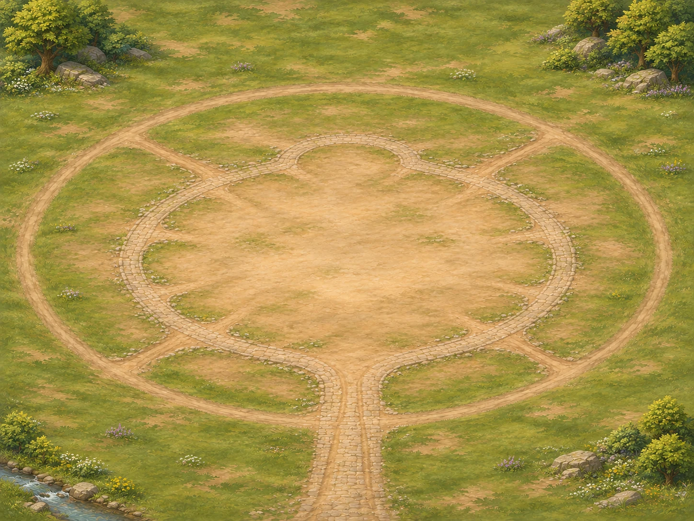

BIÊN CƯƠNG CHƯA KHÁM PHÁ
MỘT ĐẾ CHẾ BẮT ĐẦU TỪ ĐÂY

LỊCH SỬ KHÔNG BỊ XÓA
Game tự lưu tiến trình liên tục trên trình duyệt này. Ô lưu thủ công giúp giữ một mốc để quay lại sau; không cần dùng khi chơi bình thường.
Lưu nhanh ghi đè mốc lưu nhanh trước đó. Các mốc tự lưu luân phiên nằm trong danh sách bên dưới.
Xuất một bản dự phòng để giữ ở nơi khác. Đồng hồ thế giới dừng khi đóng game hoặc chuyển sang cửa sổ khác.
Hãy mở Nội thành, chọn một Ruộng lương rồi nâng lên cấp 2. Công việc mất 2 phút trong thế giới; dùng 8× để rút thời gian chờ xuống khoảng 15 giây.
Mở Doanh trại để chọn kiếm binh, giáo binh hoặc cung thủ và số lượng cần huấn luyện. Tài nguyên và hạn mức được giữ ngay; quân hoàn tất từng người rồi mới bắt đầu ăn lương.
Dùng Space để tạm dừng, M mở thế giới, C về thành. Kéo bản đồ hoặc dùng phím mũi tên; cuộn chuột hoặc chụm hai ngón để thu phóng.
Lương trên thanh tài nguyên đã trừ lượng quân đang có. Khi đóng game, thời gian và việc huấn luyện ngừng lại.
Bản này có kinh tế, tuyển quân, hành quân tới hai mỏ trống và vận tải. Trên bản đồ, chọn Mỏ đất sét hoặc Ruộng lương hoang để lập đạo khai thác; sau khi quân tới, cho xe từ thành đi lấy hàng. Đạo quân tự quay về khi chỉ còn đủ lương đường rút. Giao chiến và AI sẽ được nối tiếp.
Dữ liệu gốc chưa đọc được sẽ được giữ lại trước khi chơi mới hoặc nhập; bạn có thể xuất nó bất cứ lúc nào.